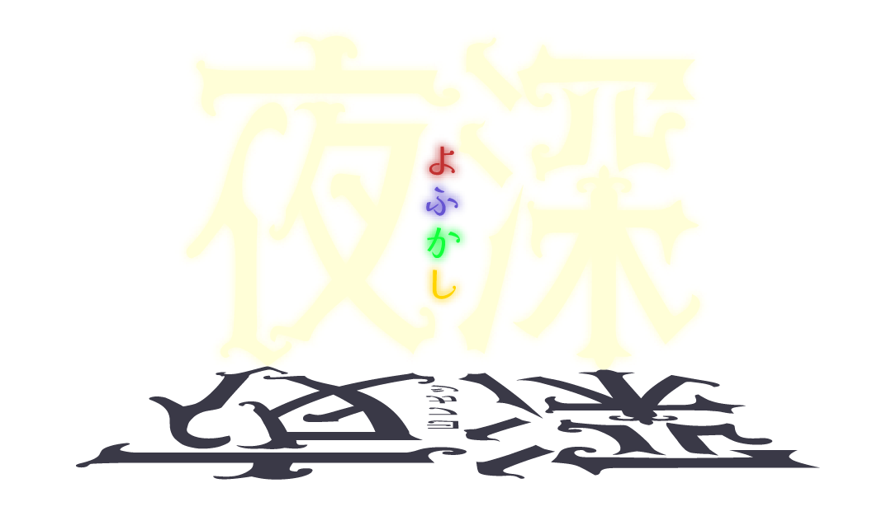

-
出身 ：千葉 誕生日 ：11/11 身長 ：161 暗魔心眼の使い手。左目に眼帯。
封じられた瞳は相対する者の心を捉える
――と自称している。「今宵もようこそ、闇の底――
我が深紅の瞳が貴殿達を深き夜に誘う！」 -
出身 ：東京 誕生日 ：7/2 身長 ：170 透明な嵐を連れてくる宵闇の支配者。
彼女の一言にかかれば、
すべてを凍らせることができる。「私はいつだって最高のいつも通り。
わかるでしょ？」 -
出身 ：こぐま座a星 誕生日 ：1999年7の月 身長 ：152 星見の力で皆を魅了する
カリスマ占星術師カサンドラ様
――と自称している。「デビューから10年経っても現役バリバリ、
今を煌めく一等星なのよ！」 -
出身 ：大阪 誕生日 ：11/19 身長 ：155 天然。「夜深」のお笑い担当。
カタコトの日本語で話す。「コレって、夜深のファンサってやつデスカ？」
Newアルバム
夜深Best Hits[10th Anniversary Ver.]
ソロアルバム
ブラッドムーン
Newシングル
よふかし！
スポットライトを浴びるアイドルグループ「夜深」！
その姿は世を忍ぶ仮の姿……
彼女達の正体は、芸能界にはびこる闇を消していく暗殺部隊だった！
そんな彼女らも、3日後には結成10周年。
記念ライブを控え、絶対に成功させようと意気込んでいる。
しかし、SNSで「夜深は終わりだ。メンバーの裏切りによって終わる」
という書き込みを発見する。単なるいたずらなら良いのだが……。
その姿は世を忍ぶ仮の姿……
彼女達の正体は、芸能界にはびこる闇を消していく暗殺部隊だった！
そんな彼女らも、3日後には結成10周年。
記念ライブを控え、絶対に成功させようと意気込んでいる。
しかし、SNSで「夜深は終わりだ。メンバーの裏切りによって終わる」
という書き込みを発見する。単なるいたずらなら良いのだが……。